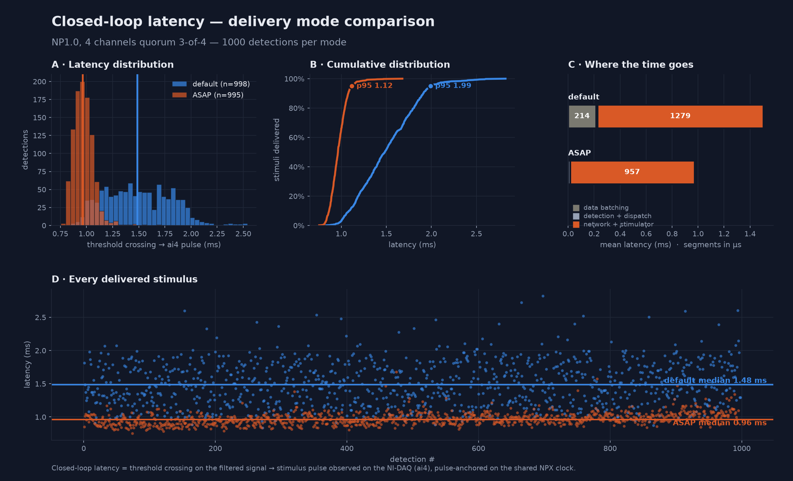
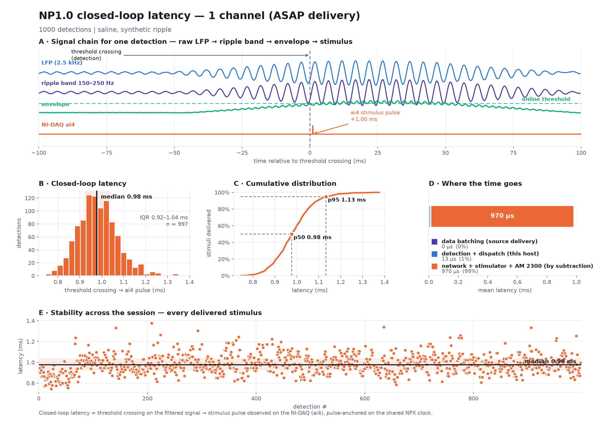
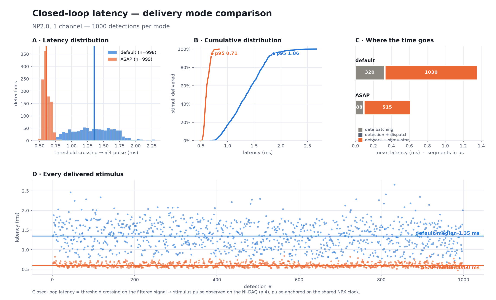
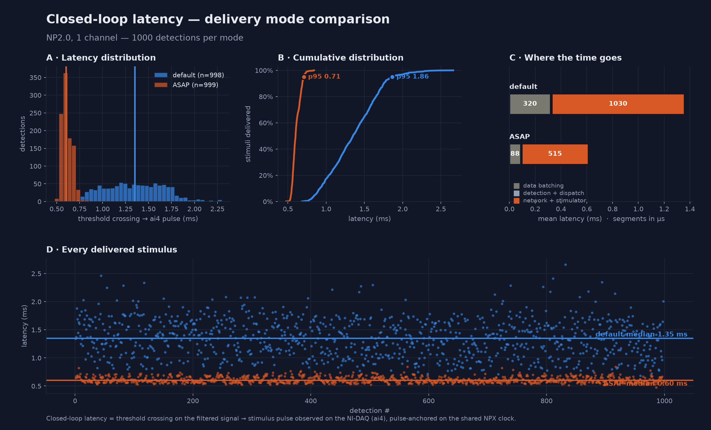
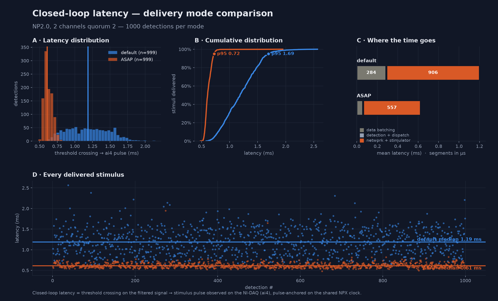

Hardware Results — closed-loop ripple → stimulation#
Real-hardware validation of the full closed loop on both Neuropixels probes: a synthetic sharp-wave
ripple played into saline → online SWR detection in SpikesPeak → UDP fire → Raspberry Pi 3B+ / AM
Systems 2300 → biphasic stimulus captured on NI-DAQ ai4.
Closed-loop latency is defined as the time from the detection threshold being crossed on the filtered probe signal to the stimulus pulse appearing on the NI-DAQ (ai4). It is measured offline from the recording, pulse-anchored on the shared Neuropixels clock, so every value is ≥ 0 by construction and corresponds to a physically delivered pulse.
Rig: Neuropixels probe → SpikesPeak (Qt/C++) → UDP → Raspberry Pi 3B+ → AM Systems 2300 → electrode, with the stimulus captured on NI-DAQ PXI-6133 ai4 at 40 kHz (25 µs edge resolution). Every test below delivered one biphasic pulse per detection (60 µs phase, 10 µs interphase gap).
Headline#
Sub-millisecond closed-loop latency on real hardware, both probes, every quorum level. With ASAP data delivery the loop runs at 0.55–0.61 ms on Neuropixels 2.0 and 0.94–0.98 ms on Neuropixels 1.0, ~1000 delivered stimuli per condition.
| configuration | median | IQR | p95 | n |
|---|---|---|---|---|
| NP2.0 — ASAP delivery | 0.546 – 0.608 ms | 0.516 – 0.662 | 0.66 – 0.72 ms | 999 |
| NP1.0 — ASAP delivery | 0.942 – 0.977 ms | 0.895 – 1.036 | 1.08 – 1.13 ms | 995 – 997 |
| NP2.0 — default delivery | 1.124 – 1.351 ms | 0.891 – 1.602 | 1.66 – 1.86 ms | 997 – 999 |
| NP1.0 — default delivery | 1.483 – 1.489 ms | 1.233 – 1.744 | 1.94 – 1.99 ms | 998 – 1000 |
| NP2.0 on the OneBox — default delivery | 1.087 ms | 0.902 – 1.271 | 1.53 ms | 1000 |
The OneBox row is measured on a different transport (USB3/FTDI) and with a different stim capture (the OneBox's own ADC, not the NI-DAQ) — see OneBox below. Compare it against the PXIe default row, not the ASAP rows: it has not been run with ASAP yet.
All tests: 0 unmatched — every stimulus pairs with a preceding detection. Both probes measured across the full quorum × delivery matrix at 1000 detections per cell.
Results by probe#
The two probes were run through the identical test matrix — 1, 2 (quorum 2) and 4 (quorum 3-of-4) detection channels, each in default and ASAP delivery, ~1000 delivered stimuli per cell. Pick a tab:
Configuration
| Probe / config | Neuropixels 1.0, NPX 1.0 with NI-DAQ (default) or NPX 1.0 with NI-DAQ (ASAP) |
| Detector input | native 2.5 kHz data.npx.lfp, int16, decimation 1 (no proc.lfp) |
| Threshold | mean + 2.5 σ on the ripple envelope (150–250 Hz FIR → abs → envelope FIR) |
| Lockout | 200 ms |
| Stimulus | one biphasic pulse per detection (60 µs phase, 10 µs gap) on ai4 |
| NI-DAQ | PXI-6133, 40 kHz (25 µs edge resolution) |
Latency — full quorum × delivery matrix
| detector | default | ASAP | saving |
|---|---|---|---|
| 1 ch | 1.483 ms | 0.977 ms | −506 µs (−34.1 %) |
| 2 ch, quorum 2 | 1.489 ms | 0.942 ms | −547 µs (−36.7 %) |
| 4 ch, quorum 3-of-4 | 1.484 ms | 0.963 ms | −521 µs (−35.1 %) |
ASAP is sub-millisecond at every quorum and tightens the interquartile range 4–5× (482→114, 500→99, 503→116 µs). Latency is flat across quorum to within 6 µs (default) / 35 µs (ASAP) — quorum decides which crossing fires, not the delay from that crossing to the pulse.



Full per-test table
| test | detector | delivery | median | IQR | p95 | n / unmatched |
|---|---|---|---|---|---|---|
np1_2ch_q2_asap |
2 ch, quorum 2 | ASAP | 0.942 ms | 0.895 – 0.994 | 1.082 | 996 / 0 |
np1_4ch_q3_asap |
4 ch, quorum 3-of-4 | ASAP | 0.963 ms | 0.908 – 1.024 | 1.116 | 995 / 0 |
np1_lat1k_asap |
1 ch | ASAP | 0.977 ms | 0.922 – 1.036 | 1.133 | 997 / 0 |
np1_latency_1ch |
1 ch | default | 1.425 ms | 1.210 – 1.685 | 1.908 | 100 / 0 |
np1_lat1k_baseline |
1 ch | default | 1.483 ms | 1.234 – 1.716 | 1.938 | 1000 / 0 |
np1_4ch_q3_baseline |
4 ch, quorum 3-of-4 | default | 1.484 ms | 1.241 – 1.744 | 1.989 | 998 / 0 |
np1_2ch_q2_baseline |
2 ch, quorum 2 | default | 1.489 ms | 1.233 – 1.733 | 1.959 | 999 / 0 |
np1_latency_1ch is the original 100-detection pilot, kept because it independently reproduces the
default-mode result at a tenth the sample size.
Detection integrity
| test | online detections | ai4 pulses | NI-DAQ ↔ NPX sync |
|---|---|---|---|
np1_2ch_q2_baseline |
1016 | 999 | 9.7 ppm, 0.012 ms |
np1_2ch_q2_asap |
1018 | 996 | 9.7 ppm, 0.012 ms |
np1_4ch_q3_baseline |
1019 | 998 | 9.8 ppm, 0.012 ms |
np1_4ch_q3_asap |
1018 | 995 | 9.8 ppm, 0.012 ms |
np1_lat1k_baseline |
1014 | 1000 | 9.6 ppm, 0.014 ms |
np1_lat1k_asap |
1014 | 997 | 9.8 ppm, 0.015 ms |
np1_latency_1ch |
116 | 100 | 9.4 ppm, 0.011 ms |
Online-detection counts exceed the recorded pulse count because detection begins before the recording starts (baseline settling) and continues through the post-record settling window; only pulses inside the recording are analysed.
Where the time goes (means, additive; net + stim is a residual by subtraction)
| detector | mode | data batching | detection+dispatch | net+stim (residual) |
|---|---|---|---|---|
| 1 ch | default | 631 µs | 8 µs | 840 µs |
| 1 ch | ASAP | 0 µs | 13 µs | 964 µs |
| 2 ch | default | 381 µs | 8 µs | 1095 µs |
| 2 ch | ASAP | 0 µs | 14 µs | 944 µs |
| 4 ch | default | 214 µs | 10 µs | 1279 µs |
| 4 ch | ASAP | 0 µs | 15 µs | 957 µs |
On NP1 the detector reads data.npx.lfp directly, so the probe-poll latency is the counted backlog:
ASAP zeroes it exactly — 0 µs in every one of ~1000 events in all three ASAP runs. Detector compute
is 8–15 µs throughout. (The residual absorbs the batching quantisation — see the method notes.)
Per-run figures
Per-run 5-panel figures (signal chain, histogram, CDF, stage decomposition, stability), light and dark:
latency/np1_asap_figure*.png, np1_baseline_figure*.png, np1_2ch_asap_figure*.png,
np1_2ch_baseline_figure*.png, np1_4ch_asap_figure*.png, np1_4ch_baseline_figure*.png.


Configuration
| Probe / config | Neuropixels 2.0 multishank, NPX 2.0 Multishank with NI-DAQ (default) or … (ASAP) |
| Detector input | data.lfp, derived from the 30 kHz raw band by a 2nd-order Bessel low-pass (−3 dB @ 400 Hz), then every 12th sample (decimation 12) |
| Threshold | mean + 2.5 σ on the ripple envelope |
| Lockout | 200 ms |
| Stimulus | one biphasic pulse per detection (60 µs phase, 10 µs gap) on ai4 |
| NI-DAQ | PXI-6133, 40 kHz (25 µs edge resolution) |
On NP2.0 the electrode number is not the read-out channel; recordings store read-out channel ids and the ripple sidecar carries the electrode → channel map.
Latency — full quorum × delivery matrix
| detector | default | ASAP | saving |
|---|---|---|---|
| 1 ch | 1.351 ms † | 0.600 ms | −751 µs (−55.6 %) |
| 2 ch, quorum 2 | 1.186 ms | 0.608 ms | −578 µs (−48.7 %) |
| 4 ch, quorum 3-of-4 | 1.124 ms | 0.546 ms | −578 µs (−51.4 %) |
ASAP is sub-millisecond at every quorum. Latency is flat across quorum to within 62 µs (ASAP).
† np2_1ch_baseline has mild sync-clock curvature (linear residual 0.077 ms vs 0.015–0.028 ms for the
others); its burst-anchored cross-check is 1.23 ms, so read the 1-ch baseline as ~1.2–1.35 ms. It
does not affect the ASAP results, whose sync is clean and whose two pairing methods agree to ≤ 7 µs.






Full per-test table
| test | detector | delivery | median | IQR | p95 | n / unmatched |
|---|---|---|---|---|---|---|
np2_4ch_q3_asap |
4 ch, quorum 3-of-4 | ASAP | 0.546 ms | 0.516 – 0.604 | 0.656 | 999 / 0 |
np2_1ch_asap |
1 ch | ASAP | 0.600 ms | 0.570 – 0.652 | 0.707 | 999 / 0 |
np2_2ch_q2_asap |
2 ch, quorum 2 | ASAP | 0.608 ms | 0.575 – 0.662 | 0.724 | 999 / 0 |
np2_4ch_q3_baseline |
4 ch, quorum 3-of-4 | default | 1.124 ms | 0.891 – 1.401 | 1.665 | 997 / 0 |
np2_2ch_q2_baseline |
2 ch, quorum 2 | default | 1.186 ms | 0.948 – 1.427 | 1.692 | 999 / 0 |
np2_1ch_baseline |
1 ch | default | 1.351 ms † | 1.100 – 1.602 | 1.863 | 998 / 0 |
The earlier np2_2channel_2required / np2_4channel_3required runs (99 detections, default, 2026-07-16)
measured 1.179 / 1.173 ms — consistent with the 1000-detection baselines, kept as a smaller-n replication.
Detection integrity
| test | online detections | ai4 pulses | NI-DAQ ↔ NPX sync |
|---|---|---|---|
np2_1ch_baseline |
1009 | 998 | 11.5 ppm, 0.077 ms † |
np2_1ch_asap |
1008 | 999 | 10.3 ppm, 0.028 ms |
np2_2ch_q2_baseline |
1005 | 999 | 10.0 ppm, 0.024 ms |
np2_2ch_q2_asap |
1009 | 999 | 9.2 ppm, 0.022 ms |
np2_4ch_q3_baseline |
1010 | 997 | 8.9 ppm, 0.015 ms |
np2_4ch_q3_asap |
1008 | 999 | 8.9 ppm, 0.019 ms |
Where the time goes (means, additive; net + stim is a residual by subtraction)
| detector | mode | data batching | detection+dispatch | net+stim (residual) |
|---|---|---|---|---|
| 1 ch | default | 320 µs | 8 µs | 1030 µs |
| 1 ch | ASAP | 88 µs | 9 µs | 515 µs |
| 2 ch | default | 284 µs | 9 µs | 906 µs |
| 2 ch | ASAP | 56 µs | 10 µs | 557 µs |
| 4 ch | default | 194 µs | 10 µs | 950 µs |
| 4 ch | ASAP | 27 µs | 10 µs | 527 µs |
On NP2 the batching counter under-reports the ASAP benefit. The counter measures block staleness at
the detector input, and drops only ~230→60 µs — but the NI-DAQ total drops ~578–751 µs and the
net + stim residual (a fixed ~0.9 ms floor on NP1) collapses ~0.4 ms. That collapse is
upstream raw-poll latency: on NP2 the detector runs off data.lfp derived by proc.lfp from the raw
poll, so the 1 ms raw-poll latency sits before the detector where its input counter cannot see it; ASAP
removes it too. The NI-DAQ total is authoritative.
Per-run figures
Per-run 5-panel figures (signal chain, histogram, CDF, stage decomposition, stability), light and dark:
latency/np2_1ch_asap_figure*.png, np2_1ch_baseline_figure*.png, np2_2ch_asap_figure*.png,
np2_2ch_baseline_figure*.png, np2_4ch_asap_figure*.png, np2_4ch_baseline_figure*.png.


Cross-probe comparison#
NP2.0 is faster than NP1.0 in both delivery modes — ~0.3 ms by default (1.12–1.35 vs 1.48 ms) and ~0.37 ms with ASAP (0.55–0.61 vs 0.94–0.98 ms). The gap is not in the shared network/stimulator path (same UDP → Pi → AM 2300 → NI-DAQ for both) but in the probe→detector delivery path: NP2 derives its LFP in software from the fresh 30 kHz raw stream, while NP1 waits on the hardware LFP band. That gap is present in both modes and carries into ASAP.
Quorum never moves the latency on either probe (flat within 6–62 µs across quorum), in either mode. It decides which threshold crossing triggers the stimulus, not the delay to the electrode.
ASAP helps NP2 more than NP1 in absolute terms (~578–751 vs 506–547 µs) even though NP2's detector-side batching counter shows a smaller drop — because NP2's dominant poll latency is upstream of the detector (above), invisible to the input counter but fully removed by faster polling.
Method#
- Start point: the online detector's own firing instant — the sample that completed the quorum and whose envelope crossed threshold, stamped in the detector at that moment and mapped onto the recording clock. Not an offline re-simulation, so no reconstruction jitter.
- End point: the ai4 rising edge, warped onto the Neuropixels clock via a shared ~1 Hz sync train. Sync quality is reported per test.
- Pairing is pulse-anchored: each pulse is matched to the detection that preceded it, so a value can never be negative and every reported latency corresponds to a real delivered stimulus. An independent burst-start-anchored cross-check (using the aperiodic ~1.6 s gaps between ripple bursts) agrees with nearest-before on every clean recording.
- Electrodes are auto-picked per run (strongest ripple), so paired conditions are not electrode-matched — the ASAP effect reproduces across all of them, and the flat totals across quorum show the electrode choice does not move the delivery path.
- The stage decomposition uses means, not medians. The batching counter is quantised to one input
sample (400 µs at 2.5 kHz), so its median snaps to 0 / 400 / 800 µs; medians are also not additive, so
subtracting them from a median total pushes the discretisation error into the residual. Means are
additive; the
net + stimsegment is obtained by subtraction, not measured directly. - Open item. On NP1 the batching mean falls monotonically with channel count (631 / 381 / 214 µs for 1 / 2 / 4 ch) while the total stays flat, so the subtracted residual rises to compensate. The totals are NI-DAQ-anchored and trustworthy; this channel-count dependence of the attribution is not yet explained. Read the stage split as indicative, not exact.
Corrections applied#
Every number on this page comes from the corrected pipeline; three offline analysis bugs were found and
fixed. Detail: ../developer_docs/RippleClosedLoopAnalysis.md.
- Clock-scale error (fixed 2026-07-21). The offline mapping mixed the nominal 100 kHz tick constant with the measured ticks-per-sample, leaving a ~10 ppm scale error that made apparent latency ramp with recording length (+6.5 ms over a 618 s run). Invalidated all latency published before that date.
- Sync off-by-one,
match="end"(fixed 2026-07-17). When the NI-DAQ dropped a sync pulse the old end-anchored pairing shifted every timestamp by one whole sync period. Default →match="auto". - Sync off-by-one, whole-period wrap (fixed 2026-07-21). When the NI-DAQ drops a pulse at the start
of the train, both the start- and end-anchored offsets are wrong by a whole period, so
autochose an offset ~1.000 s off and added exactly one sync period to every latency in that recording. Invisible in the usual diagnostics (intervals, ppm, residual all look perfect). Hit one recording (np1_4ch_q3_asap, 257/995 pulses unpaired); now detected and corrected by reducing the coarse offset modulo the sync period, with a warning.
How to reproduce#
# record (real hardware). NP1: --source "NPX 1.0 with NI-DAQ [(ASAP)]"; NP2: "NPX 2.0 Multishank with NI-DAQ [(ASAP)]"
python ripple_tools/run_latency_hw.py --source "<config name>" \
--dir <abs recdir> --name <name> --nchan 2 --quorum 2 --n 1000
# authoritative analysis: threshold crossing -> ai4 pulse
python ripple_tools/analyze_recording.py <recdir> --ws <recdir>/<name>_ws.jsonl --figs <recdir>/analysis
# figures (both themes) and A/B comparison
python ripple_tools/plot_latency_figure.py <recdir> --ws <ws> --theme light --out fig.png
python ripple_tools/plot_latency_compare.py --a <dirA> --a-ws <wsA> --b <dirB> --b-ws <wsB> --out cmp.png
Method and per-stage instrumentation: ../developer_docs/LatencyProfiling.md.
Offline pipeline, exact-detector reproduction and the sync fit:
../developer_docs/RippleClosedLoopAnalysis.md.
Recording directories hold the raw .bin bands + sidecars and are not version-controlled; the
analysis/ figures, _summary.json and the WS captures' derived results are.
OneBox — USB3 transport, same-clock capture#
The results above are all PXIe. This section is the OneBox equivalent: the same probe and the same synthetic ripple, but the basestation is a Neuropixels OneBox on USB3/FTDI instead of a PXIe module, and the stimulus is captured on the OneBox's own 12-channel ADC instead of the NI-DAQ.
Measured (2026-08-19, real NP2.0 in saline, live Pi 3B+ / AM 2300, n = 1000):
| value | |
|---|---|
| median | 1.087 ms |
| mean ± sd | 1.087 ± 0.290 ms |
| p5 – p95 | 0.653 – 1.533 ms |
| min / max | 0.420 / 2.377 ms |
| n / unmatched | 1000 / 0 |
| delivery | default (low_latency unset → acquisition poll interval 1 ms) |
| detection | 1 channel (e0 → ch0), quorum 1, z 2.5, lockout 0.2 s, online threshold 180.8 |
This is the DEFAULT-delivery number. ASAP has not been measured on the OneBox. The comparable PXIe figure is 1.124 – 1.351 ms, so the OneBox is not slower on this evidence — but do not read that as a transport comparison until the ASAP cell exists on both.
Why this measurement is structurally simpler than the PXIe one#
On a PXIe rig the stim pulse lands on the NI-DAQ: a second device with its own clock. The pulse edge and the probe's detection instant only become comparable after a sync fit against a shared TTL train — and that fit is where an off-by-one once mis-paired a periodic signal and cost a session (Status §24).
On a OneBox rig the probe and the ADC are the same device. Every sample of both bands carries a tick from the one 100 kHz hardware counter, so the two are related by arithmetic:
t_seconds = (tick - tick_of_first_raw_sample) / (fs_raw × measured_ticks_per_sample)
applied identically to the detection instants and to the pulse edges. There is no sync model, no sync channel, and nothing to mis-pair. If you have the choice, capture the stim on the OneBox ADC.
The shared counter is verifiable in the recording itself — from the 2026-08-19 run:
| raw (probe) | adc | |
|---|---|---|
| first tick | 1,849,631 | 1,849,630 |
| last tick | 62,708,212 | 62,708,105 |
The two bands begin 1 tick apart (10 µs). Two independent clocks cannot do that; it is the same counter. (The 107-tick spread at the end is simply that the last sample of each band is not simultaneous — the bands run at 30 kHz and ~30.3 kHz — not drift between clocks.)
Two properties make this robust, and both are worth understanding before trusting the number:
- The ADC's own nominal sample rate never enters the calculation. The edge's actual tick value is
used, mapped through the raw band's measured scale. This matters because the ADC's true rate is not
exactly its nominal 30300 Hz — deriving edge times from
index / fs_adcwould inherit that error. - Detections and pulses pass through the identical transform, so a scale error cancels in the difference. Latency is a subtraction of two identically-mapped quantities: at the ~85 ppm implied by this recording and a ~1 ms interval, the residual is 0.085 µs. Negligible by construction, not by luck.
Reading the stim line#
The Pi's On/Off line (GPIO17, header pin 11) goes into a OneBox ADC input — IO2 → ADC channel 2 for this run. It reads as a clean logic line: idle 0.0002 V, peak 3.296 V, pulses ~93 µs wide.
One biphasic stimulus produces several rising edges on that line (phase, interphase gap, phase), so
edges must be grouped into events. Here 1309 raw edges grouped to exactly 1000 events, and the count
is identical for any grouping gap from 1 ms to 100 ms — that insensitivity is what shows the extra edges
are pulse structure rather than noise or double-triggering. stim_events_same_clock() groups at 20 ms.
Reproducing#
# record to a ripple target (drives connect -> train -> record; --z 2.5 as used here)
python ripple_tools/record_ripples.py --source "NPX 2.0 Multishank (OneBox)" --channels 0 --quorum 1 --z 2.5 --n 1000 --dir <ABS recdir> --name <name> --timeout 3600
# analyse -- identical to the PXIe invocation apart from the stim source
python ripple_tools/analyze_recording.py <recdir>/<name> --ws <recdir>/<name>_ws.jsonl --stim-band adc --stim-channel 2 --z 2.5 --lockout 0.2 --primary 0 --figs <recdir>/analysis
--stim-band adc --stim-channel 2 is the whole difference: it takes the pulse from a band on the probe's
own clock and skips the NI-DAQ sync fit. Without it the analyser looks for a nidaq band, finds none, and
reports no closed-loop latency at all.
Two traps this run exposed#
Both were silent — they produced plausible-looking output rather than an error.
- The
setRecordingchannel override applied to the ADC band too. It is meant to carry probe read-out indices, but the ADC is also aninterp.npx.*recording, so recording "just the detection channel" rewrote the ADC to channel 0 and discarded the stim capture — a 670 MB file that looks fine and cannot be analysed. On PXIe this never bit, because the stim lived on the NI-DAQ, a separate recorder. Fixed inRecordProcessor.cpp; verify in the sidecars thatrawhas your detection channel andadcstill has all 12. - The analyser picked the ADC as the probe band. Its raw-band heuristic accepted any
npx-format band whose name lacked "lfp", whichdata.npx.adcsatisfies — and bands come back alphabetically, soadcbeatraw. The reconstruction then ran on the analog inputs and the stim square wave read as ~1000 "ripples" on the stim channel. Fixed; the sanity check is the header line — it must sayfs=2500Hz channels=[<your detection channels>], notfs=2525Hz channels=[0..11].
Quality of this run#
Online detections 1000, offline causal reconstruction 1000, stim pulses 1000, unmatched 0 — every pulse paired with a preceding detection, nothing fabricated or dropped. That four-way agreement is the check to demand of any closed-loop recording before quoting a latency from it.
Figures: RecordingTests/2026-08-19_onebox_np2_1000ripples/analysis/ (_latency, _closedloop,
_signalchain, _detection, _summary.json).